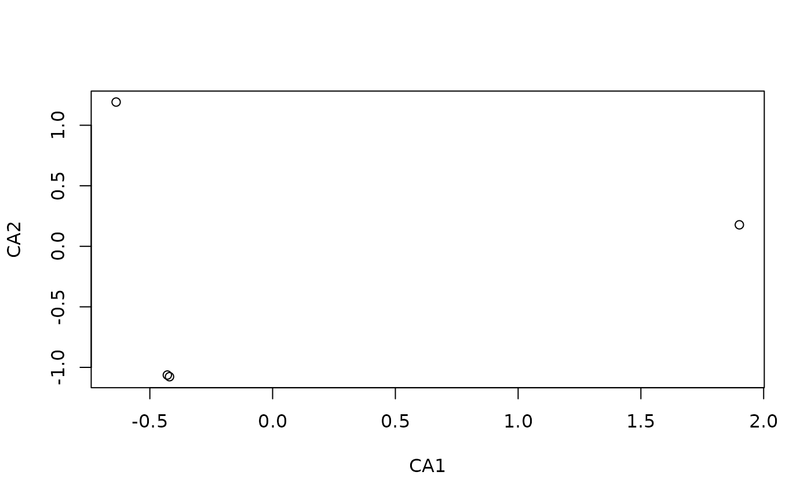

Unconstrained ordination of samples from their feature abundances in the
chi-square metric. Gives the same results as vegan::ca(),
computed straight from sparse input without forming any
\(n \times n\) or dense table, so it takes far less time and
memory for large datasets. cca() is its constrained form, canonical
correspondence analysis.
Usage
ca(counts, margin = 1L, n_axes = 3L, cpus = n_cpus())Arguments
- counts
A numeric matrix of non-negative feature abundances (samples \(\times\) features), or any of the table types listed under "Input Types". Every sample must have at least one non-zero abundance.
- margin
The margin containing samples.
1if samples are rows,2if samples are columns. Ignored whencountsis a special object class (e.g.phyloseq). Default:1- n_axes
The number of axes to return. Default:
3. Reduced, with a warning, to the number of axes with positive eigenvalues, which is at most \(n - 1\) for \(n\) samples.- cpus
How many parallel processing threads should be used. The default,
n_cpus(), will use all logical CPU cores.
Value
A numeric matrix with one row per sample and one column per axis,
named "CA1", "CA2", etc., as described in "Ordination result"
below. The values are vegan's site scores in scaling 2: what
vegan::scores(vegan::ca(counts), display = "sites") returns and what
phyloseq::plot_ordination() plots. Its attributes are:
method:"ca".eig: The eigenvalue (inertia) of each axis.prop: The proportion of the total inertia that each axis explains,eig / trace.vegan's "Proportion Explained".trace: The total inertia: Pearson's chi-square statistic of the table divided by its grand total (vegan'stot.chi), which is also the sum of all the eigenvalues.loadings: The species scores: one row per feature and one column per axis,vegan::scores(x, display = "species")(scaling 2). Features with no observations get0.
Details
Method
With \(P\) the table divided by its grand total, and \(r\) and \(c\) its row and column sums (the sample and feature weights), correspondence analysis (Legendre & Legendre 2012, §9.2; Greenacre 2007) finds the principal components of the matrix of chi-square residuals \(\bar{Q} = D_r^{-1/2} (P - rc^T) D_c^{-1/2}\). With \(\bar{Q} = U \Sigma V^T\), the eigenvalues are the squared singular values, the site scores (scaling 2) are \(D_r^{-1/2} U\), and the species scores are \(D_c^{-1/2} V \Sigma\).
The axes come from block Lanczos iteration, which needs only products of
\(\bar{Q}\) with a few vectors at a time. \(\bar{Q}\) is a sparse
matrix less a rank-one term, so these are computed in parallel from the
table's non-zero values alone, and a sparse table is never made dense.
ca() shares this solver with cca(): ca(counts) gives the same
scores, eigenvalues and loadings as cca(counts) with no constraints.
CA or PCA?
Correspondence analysis assumes that each species responds unimodally to
the underlying gradients, peaking at some optimum; PCA assumes linear
responses. Over long gradients, where many species are absent from much
of the range, CA suits better; over short ones, PCA of transformed
abundances (pca(counts, norm = 'hellinger')) is often preferred
(Legendre & Gallagher 2001). The chi-square metric gives rare species a
large weight, so CA can be sensitive to them. CA axes of long gradients
can also show an "arch" (the second axis a curved function of the
first).
Matching other software
ca() gives the same site scores, eigenvalues, inertia and species
scores as vegan::ca(counts) and vegan::cca(counts) (scaling 2), and as
skbio.stats.ordination.ca() in scaling 2, up to the signs of the axes.
ade4::dudi.coa() gives the same eigenvalues; its $l1 (row scores of
unit weighted variance) are ca()'s scores, and its $co (column
principal coordinates) are ca()'s loadings. Samples with no observations are
an error, as in vegan and ade4; features with no observations have
no weight, and get loadings of 0.
Same names in other packages
vegan::ca() and ca::ca() share their name with ecodive's ca(), and
whichever package was attached last masks the other's. Write
ecodive::ca(), or use count_ord(), which always runs ecodive's, to be
sure. ade4::dudi.coa() computes the same analysis under another name.
Axis signs and reproducibility
An eigenvector's sign is arbitrary, so different software can return
mirror images of the same axis. ca() flips each axis so that its
largest score in absolute value is positive, and flips the loadings with
it. Results are identical from run to run and for any number of cpus.
Ordination result
Every ordination function (pcoa(), pca(), rpca(), dbrda(), capda(),
capscale(), mds(), nmds(), isomap(), tsne(), umap(), and so
dist_ord()) returns the same kind of
object: a numeric matrix with one row per sample and one column per
axis, so that it can go straight into a data frame. Rows are
named after the samples, when the input has names. Columns are named
after the method: "PCoA1", "PC1", "RPCA1", "dbRDA1" or "CAP1"
(then "MDS1" for unconstrained axes), "MDS1", "NMDS1",
"Isomap1", "TSNE1", "UMAP1", and so on.
Its attributes always begin with these three, in this order, each with one value per column:
method: The method's ID, e.g."pcoa"or"nmds".eig: Each axis's eigenvalue, on the method's own scale:pcoa()andisomap()give the eigenvalues of Gower's centered matrix (sums of squares);pca()andrpca()give variances, which arepcoa()'s divided by \(n - 1\) for \(n\) samples; anddbrda()andcapscale()followvegan, which also divides by \(n - 1\) when any distance is 4 or more.NAformds(),nmds(),tsne(), andumap(), which have no eigenvalues.prop: The proportion of the total variance (or inertia) that each axis explains. Unlikeeig, it is comparable between methods, so use it to label axes.NAwhere it isn't defined.
Attributes particular to the method follow them, and last display,
with the ordination's title for plot() and print(): the method's
name, and for the methods that take distances, the distance matrix's
title, such as "Principal Coordinates Analysis of Bray-Curtis
Dissimilarity" (see ecodive_display). The matrix has class
"ecodive_ord" (as well as "matrix"), so that print() lists the
other attributes by name rather than in full, and plot() draws the
samples on the first two axes, labelled from the attributes, with any
loadings, constraints and centroids on top (see plot.ecodive_ord()).
plot(ord, "Species", iris) colours the samples by a column of
metadata. Subsetting with [, or as.data.frame(), gives a plain
matrix or data frame without the attributes.
Input Types
The counts parameter is designed to accept a simple numeric matrix, but
seamlessly supports objects from the following biological data packages:
phyloseqrbiomSummarizedExperimentTreeSummarizedExperiment
For large datasets, standard matrix operations may be slow. See
vignette('performance') for details on using optimized formats
(e.g. sparse matrices) and parallel processing.
References
Legendre, P., & Gallagher, E. D. (2001). Ecologically meaningful transformations for ordination of species data. Oecologia, 129(2), 271-280. doi:10.1007/s004420100716
Legendre, P., & Legendre, L. (2012). Numerical Ecology (3rd ed.). Elsevier.
Greenacre, M. (2007). Correspondence Analysis in Practice (2nd ed.). Chapman & Hall/CRC.
Examples
ord <- ca(ex_counts)
ord
#> # A matrix: 4 samples × 3 axes
#> # Correspondence Analysis
#> # % of variance: 45.7, 44.4, 9.9
#> CA1 CA2 CA3
#> Saliva -0.42 -1.08 2.44
#> Gums -0.429 -1.06 -0.954
#> Nose -0.637 1.19 0.00649
#> Stool 1.9 0.178 -0.00426
#> # Attributes: method, eig, prop, trace, loadings
plot(ord)

attr(ord, 'prop')
#> [1] 0.4572664 0.4438732 0.0988604
head(attr(ord, 'loadings'))
#> CA1 CA2 CA3
#> Streptococcus -0.4296509 -1.0137262 -0.369402219
#> Bacteroides 1.8702877 0.1688034 -0.002472142
#> Corynebacterium -0.6322395 1.1894747 0.006469576
#> Haemophilus -0.4158056 -1.0512969 1.318110835
#> Propionibacterium -0.6356429 1.1736266 0.012306620
#> Staphylococcus -0.6257849 1.1777719 0.002410954
# The same as cca() without constraints.
all.equal(unclass(ord), unclass(cca(ex_counts)), check.attributes = FALSE)
#> [1] TRUE